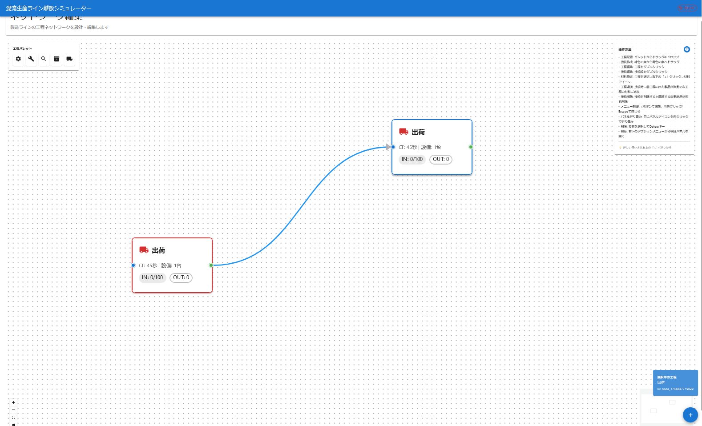

製造ラインの未来を可視化する、インタラクティブシミュレーター
ProSimNez Simulatorは、複雑な製造プロセスやサプライチェーンをモデル化し、シミュレーションを通じてその挙動を分析・評価するためのWebアプリケーションです。
GUIベースの直感的な操作で、誰でも簡単に生産ラインのボトルネック発見や、設備投資の効果測定、人員配置の最適化といった「What-If分析」を行えます。

シミュレーターのUI画面非同期処理を得意とするPythonのフレームワークFastAPIをベースに構築されています。シミュレーションのコアエンジンにはSimPyを採用し、複雑な離散イベントシミュレーションを効率的に実行します。
モダンなUIを構築するためのライブラリReactと、静的型付けを導入するTypeScriptを全面的に採用。状態管理にはRedux Toolkitを使用し、大規模なアプリケーションでも予測可能で堅牢な状態管理を実現しています。
DockerとDocker Composeを用いて、アプリケーション全体（バックエンド、フロントエンド、データベース）をコンテナ化しています。これにより、開発環境の構築が数コマンドで完了し、本番環境へのデプロイもスムーズに行えます。
生産拠点、倉庫、輸送経路などをキャンバス上にドラッグ＆ドロップで配置し、視覚的に生産ラインを構築できます。各要素のパラメータ（処理時間、バッファ容量、輸送ロットサイズなど）もダイアログから簡単に設定可能です。
シミュレーションを開始すると、各工程の稼働状況、バッファの在庫量、搬送リソースの動きなどがリアルタイムでアニメーション表示されます。問題が発生している箇所を直感的に把握できます。
シミュレーション完了後、詳細な分析レポートが生成されます。スループット、リードタイム、設備稼働率、在庫推移などのKPIがグラフや表で可視化され、システムのパフォーマンスを定量的に評価できます。
ここに計算結果が表示されます。